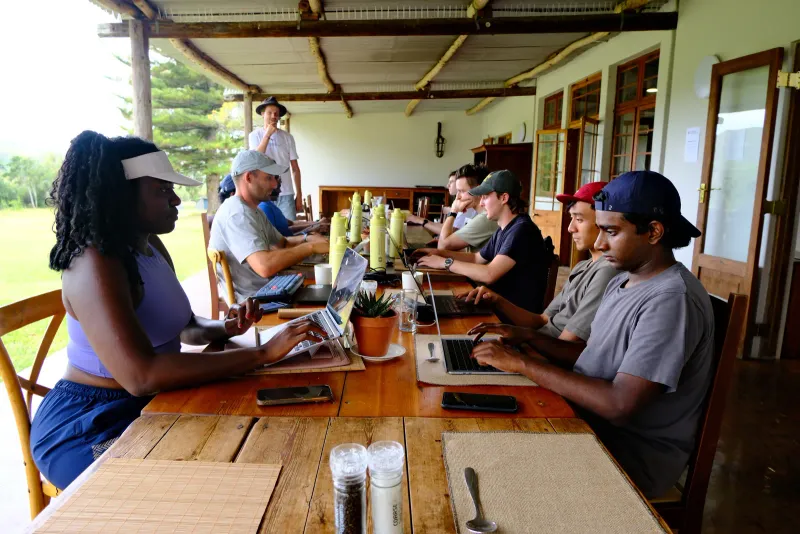

Cooperative AI Research Fellowship 2026
The fellowship was a full-time 3-month research program for participants from diverse backgrounds around the world to pursue AI safety research from a cooperative AI perspective. The fellowship ran from January to April 2026 in Cape Town, South Africa, and kicked off with a week-long retreat. While working from the AI Safety Cape Town co-working space, participants received mentorship from top researchers in the field of cooperative AI, including from organisations such as Google DeepMind, the University of Oxford, and MIT. Alongside this, participants were provided with resources for building their knowledge and network in cooperative AI, and financial support covering their living and travel expenses. The aim of this program was to prepare fellows for research careers in cooperative AI, and to support the burgeoning AI safety and cooperative AI ecosystem in South Africa. In line with this, the University of Cape Town (UCT) launched the African AI Safety Hub at the UCT AI Initiative.